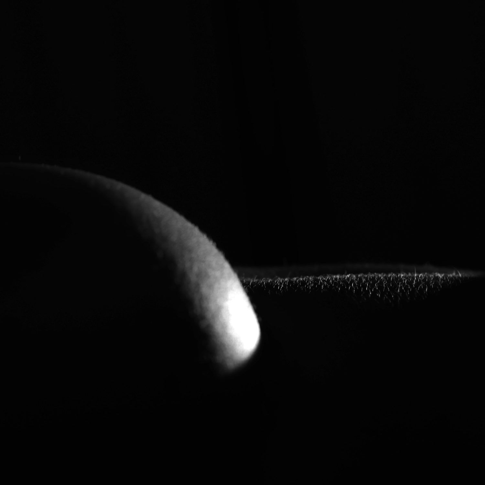

Nick Brand Photography
Fifty Pages
of Shades
The human form, rendered as landscape.
The work
Fifty Pages of Shades is the human form seen as landscape. Skin, shadow and line abstracted until the body becomes terrain, light and pure shape. A shoulder becomes a horizon. A curve becomes a dune. Light moves across skin the way it moves across sand, and the body, stripped to black and white, dissolves into form.
These are works of abstraction. They celebrate the body as a source of line, light and texture: tasteful, never explicit, and made to hang in living rooms, lobbies and considered interiors. The body is the material; form is the subject.
Sizes
Scaled to the wall
it will live on.
Available works are shown to scale against a 175 cm figure. Because the work is printed on canvas, almost any dimension is possible: send the wall measurements and the studio will recommend a size and frame.
As a guide, a feature work fills about two-thirds of the wall or furniture it sits above, and hangs with its centre near eye level, around 145 to 150 cm from the floor.
The artist
Nick Brand Photography
A Sydney fine-art photographer with more than twenty years behind the camera. Fifty Pages of Shades is the body of work Nick returns to again and again: the human form as abstraction, photographed in black and white and treated the way a landscape photographer treats a coastline or a dune field.
Every work begins with a refusal of the obvious. He photographs the body not to depict a person but to find the landscape hidden in it: the ridge of a shoulder reading as a horizon, the fall of light across skin reading as weather. Nothing is added; everything unnecessary is removed.
- 20+years as a professional photographer and artist
- 15prints in every edition, then closed for good
- Sydneyshown in Sydney businesses, held in private collections
Collecting Fifty Pages of Shades
Finite, numbered,
and made to last.
- Medium
- B&W photograph on canvas
- Edition
- 15 numbered prints
- Frame
- Floating: black · oak · white
- Includes
- Signed COA & provenance record
- Delivery
- Australia-wide · worldwide on request
Limited & numbered
Each work is an edition of 15, individually numbered. When it sells out it is closed and never reprinted. Scarcity is real, and recorded.
Provenance & authenticity
Every work ships with a signed Certificate of Authenticity recording title, edition number and details, plus a documented provenance record.
Made at scale
Black-and-white prints on premium canvas, gallery-framed and wired. Canvas stays light, matte and readable from across a room: artworks, not posters.
Framed for the wall
A choice of floating frames in black, natural oak or white, and custom sizes for almost any dimension.
- 1
Enquire
Price, availability, custom size or reserve a work.
- 2
Confirm
Size, frame and delivery agreed in writing.
- 3
Receive
Framed, wired and delivered with certificate.
Designers, architects & corporate
Art specified
for architecture.
Nick Brand Photography works with interior designers, architects, developers and corporate clients to place distinctive large-scale black-and-white art into residential, hospitality and commercial spaces: feature walls, lobbies, voids and double-height spaces.
Nick also accepts a limited number of commissions each year, bespoke black-and-white pieces created for a particular space, collection or project.
- Trade pricing for approved design and architecture professionals
- Custom sizes and a choice of frames
- Turnkey delivery: framed, wired, one point of contact
- Brand-safe abstract monochrome form
- Multi-site schemes, including one image scaled across spaces
Begin a conversation
Whether you are acquiring
your first piece, sourcing for a project, or commissioning something bespoke
The studio replies personally, usually within one business day. No pressure, no sales scripts. Want a portrait? Book a session in the photo studio.
studio@fiftypagesofshades.com · www.fiftypagesofshades.com
Nick Brand Photography · Fifty Pages of Shades · Sydney, Australia
This is general information, not financial advice. Art carries no guaranteed financial return; buy art first for the pleasure of owning it.